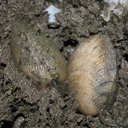

|
|
|
Venus
clams
Family Veneridae
updated
May 2020
if you
learn only 3 things about them ...
 Many venus clam species are edible. Many venus clam species are edible.
However, don't eat wild clams as some may make you ill.
They
are eaten by snails that bore a hole in their shell. See
if you can find such a shell? |
|
Where seen? Another seafood favourite, in Singapore, these clams are also called
'la-la'. Venus clams are still commonly seen on some of our shores,
in sandy and rocky areas near seagrasses and coral rubble.
What are venus clams? Venus clams belong to the Family Veneridae. There are more than 400
known species in this family with some of the most colourful of bivalves.
Many are edible.
Features: 3-4cm. The two-part
shells are thick. Some have ridges or various patterns. They are usually
buried just beneath the surface. The fine ridges on their shells to
help them stay buried.
What eats them? Despite their thick hard shells they are still preyed upon by predators
such as moon snails, drills, crabs
and shorebirds. Of course humans love to eat them too.
What do they eat? Like many other
bivalves, venus clams are filter feeders. They lie buried in the sand
and extend their siphons to the surface at high tide. They use their
siphons to suck in water and filter out microscopic food. The water
also brings fresh oxygen to the animal.
Clams in this and related families, have a
folded gill structure that is well developed for filtering out tiny
food particles. The Gladys Archerd Shell Collection website has a drawing
of this complex filter.
|

Venus clams being harvested.
Pulau Sekudu, Jul 03 |

Half buried under a stone.
Chek Jawa, Sep 02 |

Siphon sticking out.
Changi, Feb 02 |
Human uses: Many of the commercially
important clams are venus clams. Some are also used as fish bait.
Venus clams are among the favourite seafood of people everywhere.
Like other filter-feeding clams, however, venus clams may be affected
by red tide and other
harmful algal blooms. Such clams can then be harmful to eat.
Status and threats: None of our
venus clams are listed among the threatened animals of Singapore.
However, like other creatures of the intertidal zone, they are affected
by human activities such as reclamation and pollution. Trampling by
careless visitors and over-collection can also affect local populations
of young clams. |
| Some Venus
clams on Singapore shores |
| Unidentified
venus clams on Singapore shores |
Family
Veneridae recorded for Singapore
from Tan Siong
Kiat and Henrietta P. M. Woo, 2010 Preliminary Checklist of The
Molluscs of Singapore.
^from WORMS
+Other additions (Singapore Biodiversity Record, etc)
| |
Venus
clams seen awaiting identification
Species
are difficult to positively identify without close examination.
On this website, they are grouped
by external features for convenience of display.
|
| |
Anomalocardia
squamosa
Anomalocardia malonei
+Antigona chemnitzii
Antigona lamellaris
Bassina foliacea
Callista chinensis
Circe scripta (Script venus
clam)
Circe tumefacta
Circe undatina
Clementia papyracea
Dosinia cretacea
Dosinia exasperata
Dosinia juvenilis
Dosinia laminata
Dosinia trigona=^Costellipitar madecassinus
Gafrarium dispar (Discrepant venus clam)
Gafrarium divaricatum (Forked
venus clam)
Gafrarium pectinatum
Gafrarium tumidum=^Gafrarium pectinatum (Tumid venus clam)
Globivenus toreuma=Venus toreum
+Hyphantosoma intricatum
Irus irus=Venerupis chinensis (Long-leaf irus clam)
+Lioconcha sowerbyi (Sowerby’s venus clam)
Marcia hiantina
Marcia flammea
Marcia japonica
+ Marcia recens
Meretrix lusoria
+Meretrix lyrata (Lyrate Asiatic hard clam)
Meretrix meretrix (Meretrix venus clam)
Paphia
alapapilionis=^Paphia rotundata (Butterfly venus clam)
Paphia sinuosa
Paphia textile (Textile venus clam)
Paphia undulata (Undulating venus clam)
+Paratapes undulatus
Periglypta ata
Periglypta crispata
Periglypta puerpera (Youthful venus clam)
Pitar affinis
Pitar belcheri
Pitar citrinus
Pitar deshayesi
+Pitar lineolatus
Pitar marrowae
Pitar striata
Placamen calophyllum
Placamen chloroticum
Placamen isabellina
+Placamen lamellatum
Protapes gallus=Paphia gallus
Ruditapes philippinarum
Ruditapes variegatus
Tapes belcheri
Tapes literatus
Timoclea arakana
Timoclea chuangi
Timoclea decorata
Timoclea lionota
|
|
Acknowledgements
With grateful thanks to Andre Sartori from eBivalvia
on EOL's Life Desk for identifying some of the Venus clams.
Links
References
- Chan Sow-Yan & Lau Wing Lup. 30 April 2020. Sightings of the long-leaf irus clam, Irus irus, in Singapore. Singapore Biodiversity Records 2020: 49-52 ISSN 2345-7597
- Tan Siong Kiat, Chan Sow-Yan & Lau Wing Lup. 31 October 2019. Sowerby’s venus clam, Lioconcha sowerbyi, a new record for Singapore, Singapore Biodiversity Records 2019: 118-119 ISSN 2345-7597.
- Tan Siong Kiat and Chan Sow-Yan. 31 Oct 2017. First Singapore record of Venus clam, Pitar lineolatus. Singapore Biodiversity Records 2017: 142
- Tan Siong Kiat. 31 Aug 2017. Lyrate Asiatic hard clam, Meretrix lyrata, at Changi coast. Singapore Biodiversity Records 2017: 142
- Tan Siong Kiat. 31 Aug 2017. Two species of venus clams new to Singapore: , Antigona chemnitzii and Hyphantosoma intricatum. Singapore Biodiversity Records 2017: 114-115.
- Tan Siong
Kiat and Henrietta P. M. Woo, 2010 Preliminary
Checklist of The Molluscs of Singapore (pdf), Raffles
Museum of Biodiversity Research, National University of Singapore.
- Tan, K. S.
& L. M. Chou, 2000. A
Guide to the Common Seashells of Singapore. Singapore
Science Centre. 160 pp.
- Wee Y.C.
and Peter K. L. Ng. 1994. A First Look at Biodiversity in Singapore.
National Council on the Environment. 163pp.
- Ng, P. K.
L. & Y. C. Wee, 1994. The
Singapore Red Data Book: Threatened Plants and Animals of Singapore
 .
The Nature Society (Singapore), Singapore. 343 pp. .
The Nature Society (Singapore), Singapore. 343 pp.
|
|
|